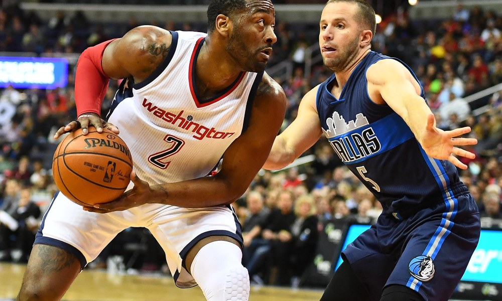

Game 1: Atlanta Hawks at Charlotte Hornets
My Pick:
Charlotte Hornets
Why I'm Rolling with them:
Atlanta has been pretty bad to start this season, with a brutal defense to go along with a stagnant offense. Trae Young is an incredibly gifted passer, however I'm not sold on the rest of the Hawk's ability to create. Charlotte on the other hand has had no problem creating, and Tony Parker is averaging 5 assists off the bench as a testament to that. Because of that increased playmaking and more even offense from this Charlotte squad, I see them winning 117-104.
Game 2: Washington Wizards at Dallas Mavericks
My Pick:
Washington Wizards
Why I'm Rolling with them:
The Wizards have looked incredibly dysfunctional to start the season, but their win against the Knicks had some encouraging moments. Not having Otto Porter Jr allowed Oubre to play a more prominent role, and Dwight Howard looked pretty good, grabbing 10 points and 10 boards for the double double. Beal and Wall also match up nicely against the Dallas backcourt, and with Dwight theoretically snagging more rebounds to help them on that end, Washington takes this one, 111-104.
 John Wall needs to step it upGame 3: Brooklyn Nets at Phoenix Suns
My Pick:
Brooklyn Nets
Why I'm Rolling with them:
These two teams seem pretty even, and I had a hard time picking this one. However, although I think Jarrett Allen and DeAndre Ayton will be a good matchup (as well as Booker and LeVert), I like the rest of Brooklyn's roster a lot more. Dinwiddie, Hollis-Jefferson and Russell are 3 more top tier producers for this Brooklyn team and should provide the edge, as Brooklyn wins this one 117-110.
Game 4: Milwaukee Bucks at Portland Trail Blazers
My Pick:
Milwaukee Bucks
Why I'm Rolling with them:
Giannis should be able to have a really good game against Aminu, who has struggled against Giannis in the past. In addition to this, I think the presence of Brook Lopez really helps this Bucks team in regards to their spacing, as they have way more opportunities to get into the lane now. Portland's wing rotation has always been pretty weak, so their help defense will have a hard time with this Bucks team and their ability to hit the 3, drive, and just watch Giannis work. Bucks take this one, 120-111.